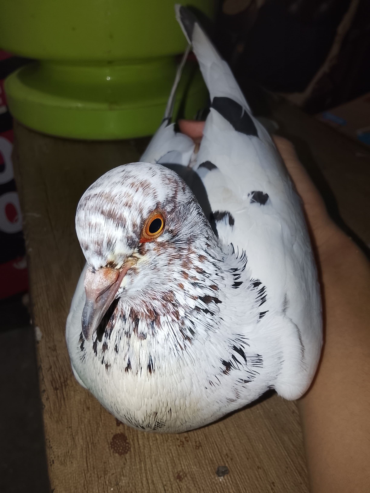
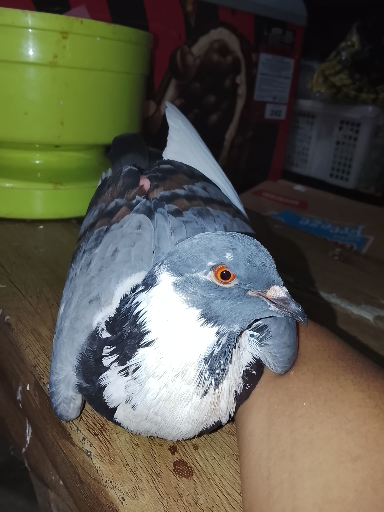
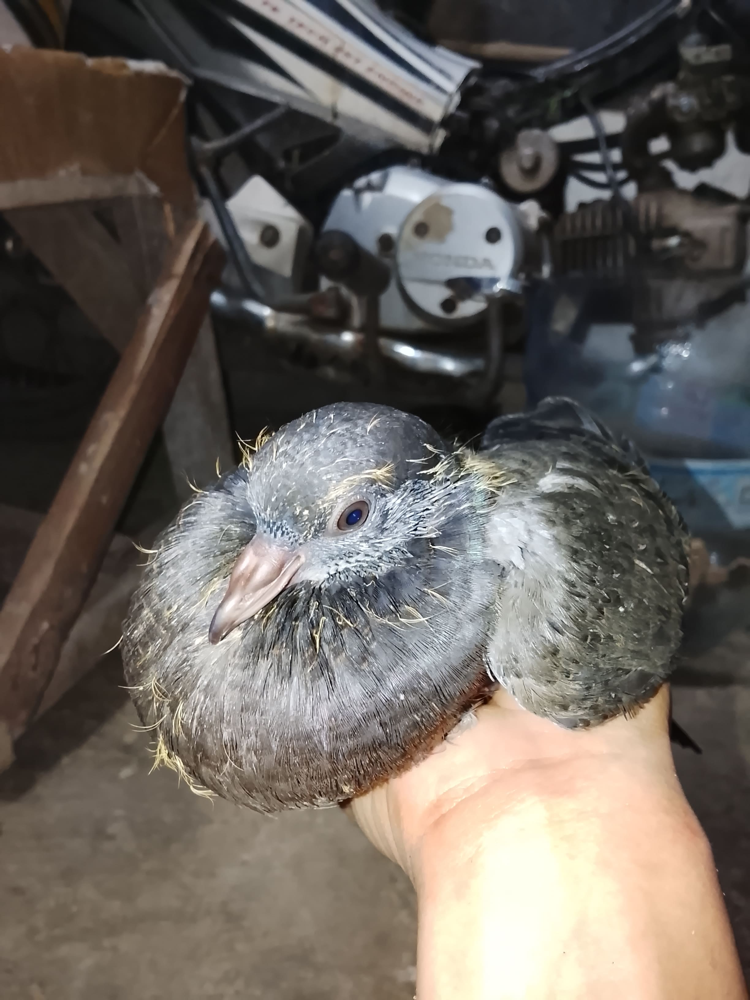
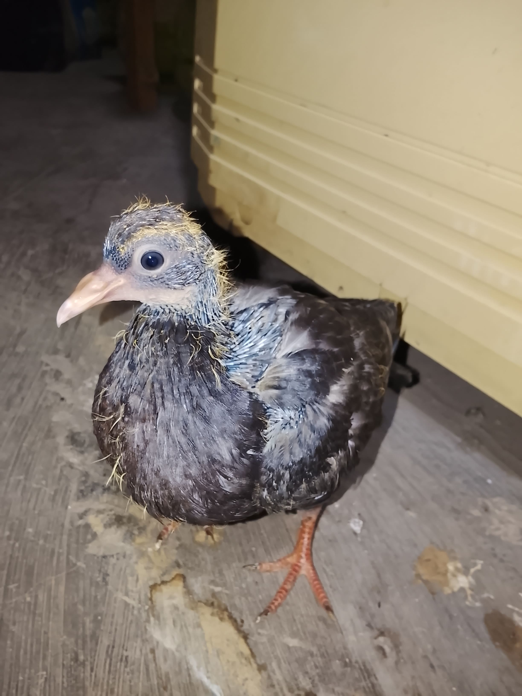
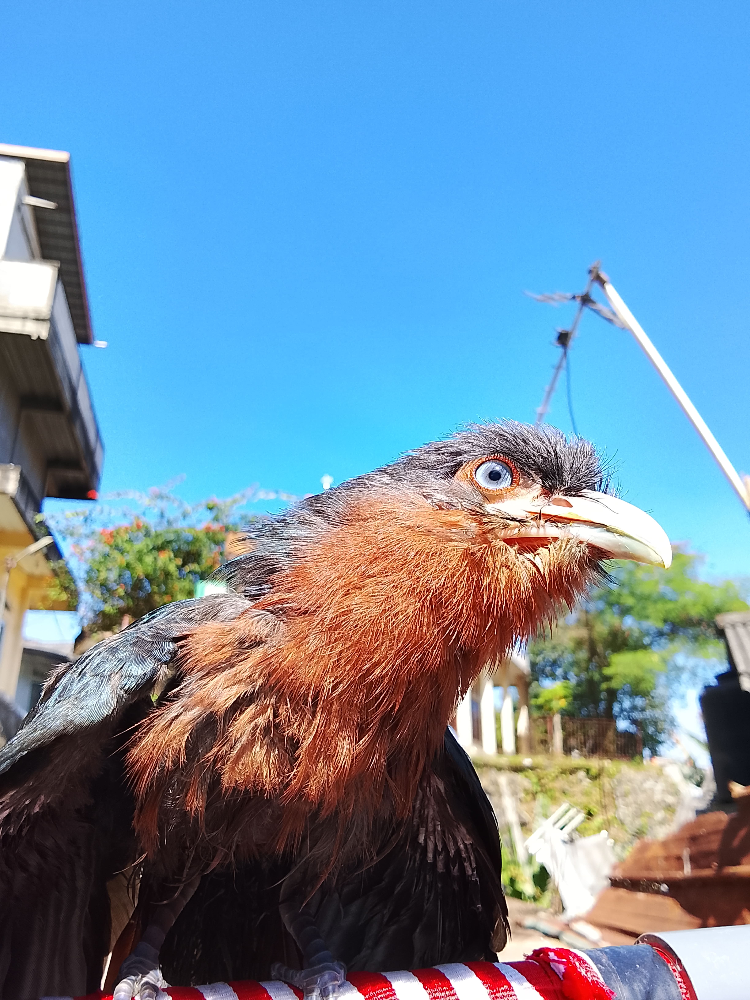

Merpati Pos/Blorok
01Merpati dengan warna bulu putih bercorak hitam mencolok, mata jagung, kelamin jantan.
Gen 1

Merpati Pos/Blorok
02Merpati dengan warna bulu abu bercorak coklat dan hitam, sayap berwarna putih, mata jagung, kelamin betina.
Gen 1

Next Gen Merpati Pos
03Generasi berikutnya dari merpati Pos/blorok gen 1, warna bulu hitam menutupi seluruh tubuh, kelamin jantan.
Gen 2

Next Gen Merpati Pos
04Generasi berikutnya dari merpati Pos/blorok gen 1, warna bulu putih bercorak hitam mencolok, kelamin betina.
Gen 2

Kadalan Birah
05Badan berukuran besar, bulu berwara merah karat, sayap berwarna biru tua mengkilap, iris mata berwarna biru, kelamin jantan.
SPECIAL